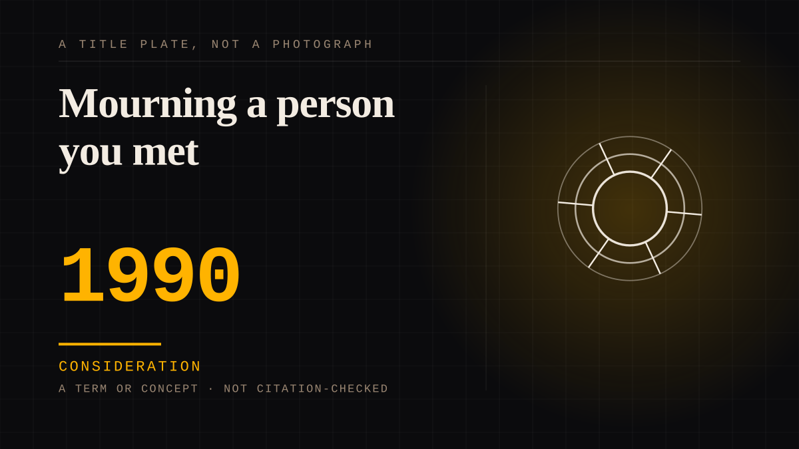

A term or concept · 1990 · Grief
Mourning a person you met
A working vocabulary for grief over a public figure, drawn from bereavement practice, used without qualification.

Adopted slowly and grudgingly. The vocabulary now exists and is mostly used to dismiss people, which is an unfortunate fate for a body of practical advice about a real grief response to a real loss.
Consideration. The part where somebody stops and thinks. The research, the diagnosis, the ethics, the lawsuits, the regulators. Roughly fifty years of arguing with itself about whether this is a relationship.
Application. One-sided attachment put to work on purpose. Creator economies, community, fandom as infrastructure, and the things that genuinely help people. Not automatically good - a tool with an obvious use is a tool that will also get a bad one.
Where it sits
1950 1950-1999 · 1990 1999
Provenance · 3 source record(s)
- retrievableThe scale of the first known mass grief for a stranger: an estimated 750,000 people at Rudolph Valentino's funeral in 1926 caused destruction at the funeral homeFan Culture. EBSCO Research Starters, Social Sciences and Humanities. ↗
- retrievable'Cofactuality': viewers manage narrative loss by working through and sharing multiple versions of the ending they would have preferred. Grief gets socialised through arguing about what should have happenedMcCormick, C. TV finales and the meaning of endings (doctoral dissertation). ↗
- needs-sourceNamed inside a compound citation that also named the work cited separately on this entry, which carries its own locator. This one is recorded on its own so that a single string is not standing in for several works. It has not been identified here - no title, no venue, no locator - and nothing is claimed about what it says. The string it came from is kept in
split_fromso the compound is still on the record.Peter Brooks.
Connected · 2 out, 6 in
Reported as a story
It sits in